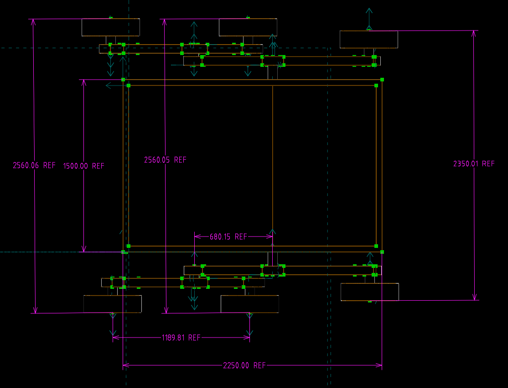

各繪圖軟件套件安裝及設定流程 <<
Previous Next >> note
week15-18
week15
第15周影片查驗:
心得:
在這幾周我學到了自己編譯繪圖軟體，模擬軟體webots和v-rep和nx等的軟體，雖然要適應新的軟體很難但是我還是盡量的依靠電子書和網路上的教程達到了，在一開始使用webots時非常辛苦，必須去尋找物件設定的節點和如何在軟體裡面建模，在v-rep也是如此，而且v-rep更加的困難，他的建模方式並沒有像webots一樣設定好所以使用起來困難重重，但是它的彈性是比較大的，希望在之後可以從這兩套軟體中分別找出我們比較優勢的地方並且把它給發揮並且統整起來用作對軟體模擬更加好用的工具或選項。
nx與solvespace圖檔導入webots :
nx:
nx導入webots時能夠分割各零件，但是導入後分割的零件有可能切割過細，必須將一組的零件個別整合再一起，也就是將各零件children中的shape放入要組合的主要零件的children底下。
solvespace:
導入後零件不會個別分割開來，會以組合之後的形狀直接導入webots中，雖然導入方便快速但是有無法切割的缺點。
操作影片:
week16
心得:
繪製solvespace零件的部分可能是本次查驗比較困難的部分，轉出stl和wrl之後必須要導入webots和v-rep之中，若要真實的達到模擬，那必須要做更多的程式修改，才能夠達到我們對連接軸的驅動和加入馬達達到輸出馬力的部分，這部分是本次查驗之中比較難的延伸部分，如果能夠對這部分深入並且達成，那會是比較值得去開發的一塊區域。
操作影片:
week17
操作影片:
尺寸標註:

各繪圖軟件套件安裝及設定流程 <<
Previous Next >> note